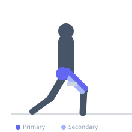

Exercise guide / Front Foot Elevated Reverse Lunge
Front Foot Elevated Reverse Lunge
The front-foot elevated reverse lunge places the working foot on a slight elevation (a plate or low step), increasing the range of motion as the rear knee descends below the level of the front foot. This creates greater hip flexion and quad stretch on the working leg while also increasing glute recruitment. It bridges the gap between a standard reverse lunge and the Bulgarian split squat in terms of difficulty and range of motion.
Primary muscles
rectus femoris
vastus lateralis
gluteus maximus
Secondary muscles
biceps femoris long head
psoas major
Stabilizers
gluteus medius
erector spinae
Equipment
Weight Plates
Optional
Dumbbell (Fixed)


Starting position
- Stand on a weight plate or low step (1-3 inches high) with the working foot. Hold dumbbells at the sides if loading.
Setup
- Place a single weight plate flat on the floor. Stand on it with both feet, then step one foot back off the plate to perform the reverse lunge.
Steps
- Step 1: Stand on the elevation with the working foot. Step one foot back into a reverse lunge stance.
- Step 2: Lower the rear knee directly down toward the floor, allowing it to descend below the level of the elevated front foot.
- Step 3: The front foot knee bends deeply as the rear knee approaches the floor.
- Step 4: Drive through the front foot to return to the starting position. Alternate legs each rep.
Coaching cues
- Front foot stays centered on the elevation
- Rear knee drops straight down
- Drive up through the front heel
Breathing
- Inhale on the descent, exhale on the drive.
Range of motion
- Rear knee should travel to or near the floor below the front foot level.
Tempo
- 3-0-1-0
Common mistakes
- Front foot rolling off the edge of the elevation
- Rear knee touching and resting on the floor
- Torso leaning excessively forward
Safety
- Ensure the elevation surface is stable and non-slip
- Master the standard reverse lunge before adding a deficit
Training
- strength: 5–8 reps
- hypertrophy: 10–15 reps
- strength: 3–4 sets
- hypertrophy: 3–4 sets
- Rest: {'strength': 120, 'hypertrophy': 90}